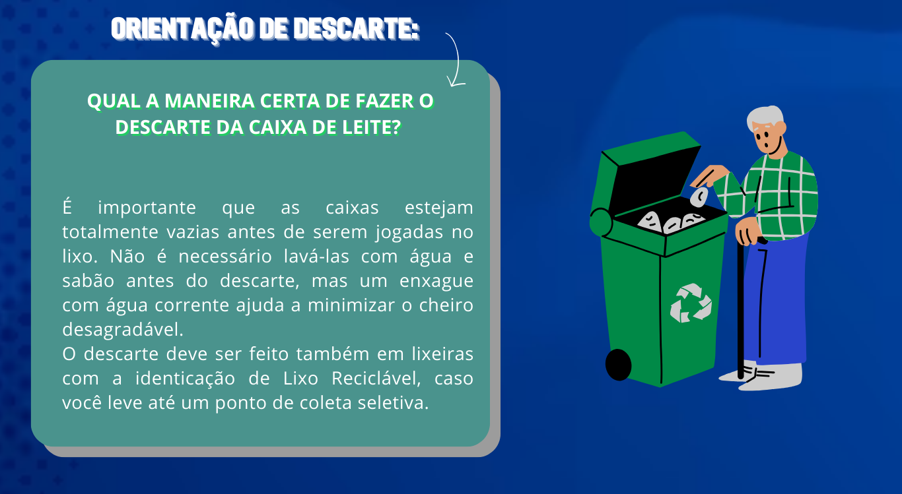
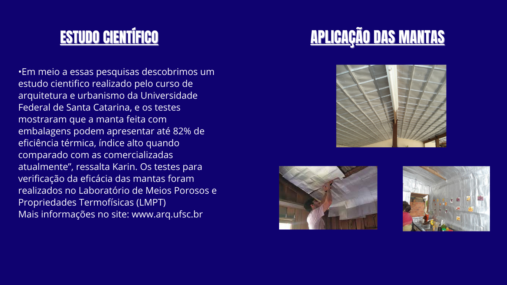
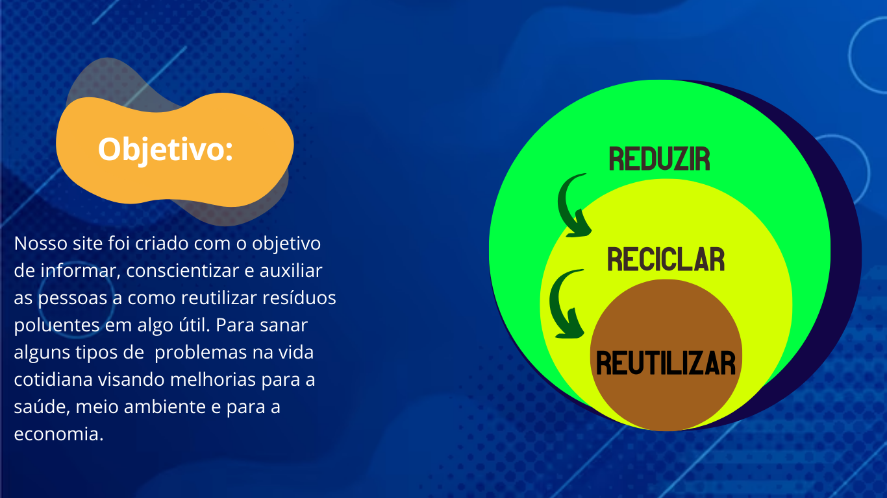

Forro Sustentável
Nosso site foi desenvolvido para informar e orientar sobre reaproveitamento,
reciclagem, fabricação e execução de materiais produzidos a partir de resíduos
que são descartados de forma incorreta.
Devido a preocupação com o descarte incorreto da caixa de leite, surgiu a ideia de criar um site que oriente as pessoas não somente na correção de descarte de resíduos, mas também com informações sobre os mesmos. Há período de decomposição tardio causando ainda mais impactos ao meio ambiente.
Para doar itens de caixas de leite, abaixo estão os principais pontos de Coleta Seletiva são:
1-Praça Da República - Campina
2-Praça Batista Campos - Batista Campos
3-Praça Dom Pedro - Cidade Velha
4-Praça Amazonas - Jurunas
5-Praça Floriano Peixoto - São Braz
O Serviço da Prefeitura de Belém acontece de segunda a Sábado Das 08H Às 12H:
Mapa de Coleta Seletiva
Mapa de Coleta Seletiva


Nosso site tem como objetivo ser um
meio de comunicação para orientar as
pessoas e auxilia-las a nos ajudar na coleta
destes materiais reutilizaveis.
Queremos conscientizar as pessoas por
intermédio de nossas informações e ações.
O local aderido como ponto de coleta
será na Universidade UNAMA.
Site UNAMA: https://www.unama.br/in
stitucional/nacional
